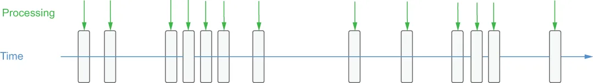

With stream native processing, each new piece of data is processed as soon as it arrives, as illustrated in figure 4.2. Unlike batch processing, there are no arbitrary processing intervals, and each individual data element is processed separately.
采用流原生处理时，每一条新数据一到达就被立即处理，如图 4.2 所示。与批处理不同，这里不存在任意设定的处理间隔，每个单独的数据元素都被独立处理。

Figure 4.2 With stream processing, the processing is triggered by the arrival of each message, so the processing cadence is irregular and unpredictable.
图 4.2 采用流处理时，处理由每条消息的到达触发，因此处理节奏是不规则且不可预测的。
Although it may seem as though the differences between stream processing and micro-batching are just a matter of timing, there are implications for both the data processing systems and the applications that rely on them. The business value of data decreases rapidly after it is created, particularly in use cases such as fraud prevention or anomaly detection. The high-volume, high-velocity datasets used to feed these use cases often contain valuable, but perishable, insights that must be acted upon immediately. A fraudulent business transaction, such as transferring money or downloading licensed software, must be identified and acted upon before the transaction completes; otherwise it will be too late to prevent the thief from obtaining the funds illegally. To maximize the value of their data for these use cases, developers must fundamentally change their approach to processing real-time data by focusing on reducing the processing latency introduced from traditional batch processing frameworks and utilizing a more reactive approach, such as stream-native processing.
尽管流处理与微批处理之间的差异看上去似乎只是时机问题，但它对数据处理系统和依赖这些系统的应用都有着实际影响。数据的业务价值在其产生之后会迅速衰减，在欺诈防范或异常检测这类用例中尤其如此。用来支撑这些用例的高体量、高速度数据集，往往包含着有价值但极易过时的洞察，必须被立即采取行动。一笔欺诈性的业务交易，例如转账或下载授权软件，必须在交易完成之前被识别出来并加以处置；否则，想要阻止窃贼非法获取资金就为时已晚了。为了在这些用例中最大化数据的价值，开发者必须从根本上改变处理实时数据的方式：把重点放在减少传统批处理框架所引入的处理延迟上，并采用一种更具反应性的方式，例如流原生处理。